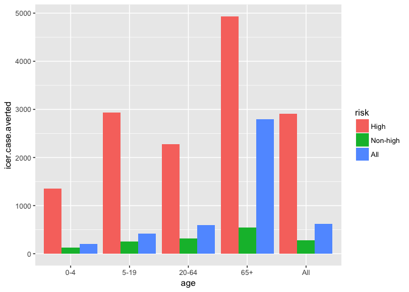
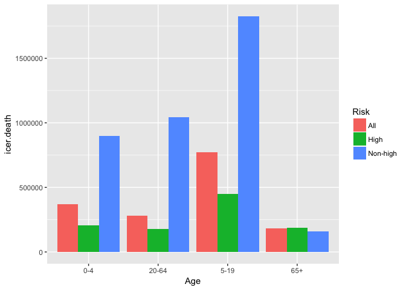
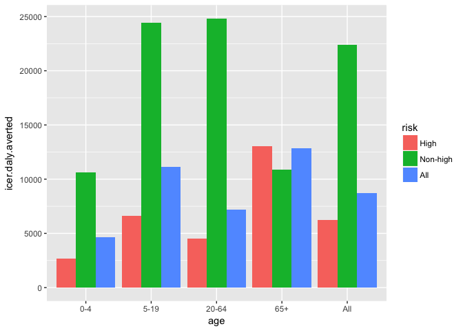
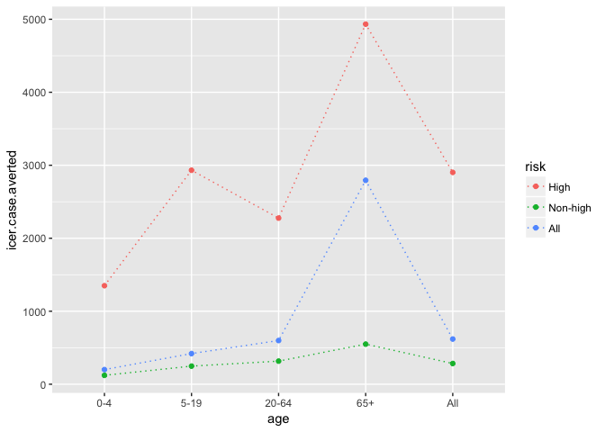
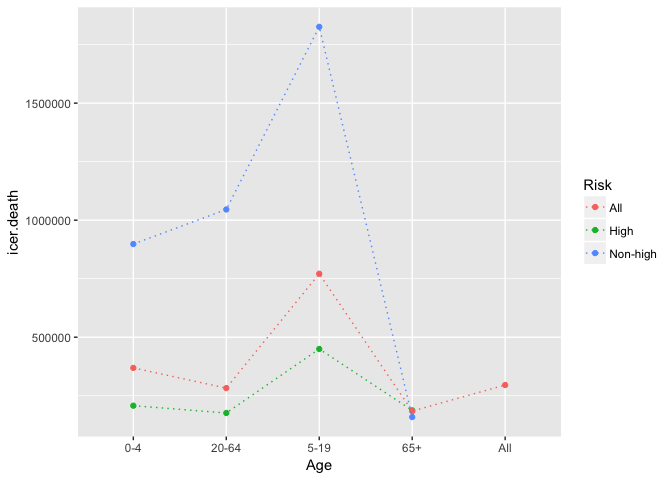
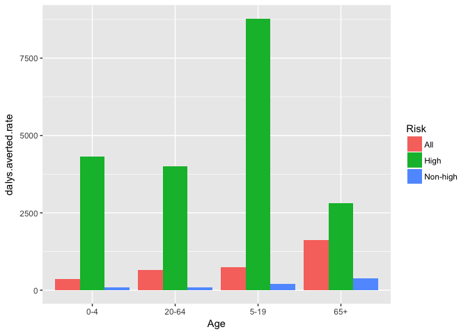
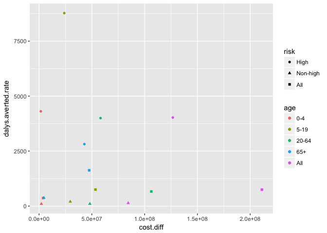

draft-figs
rm(list = ls(all.names = TRUE))
library(ggplot2)
library(tidyr)df <- read.csv("~/git/economic-influenza/df/icer-vaxbase-40.csv")
df$age <- factor(df$age, levels = c("0-4", "5-19", "20-64", "65+", "All"))
df$risk <- factor(df$risk, levels = c("High", "Non-high", "All"))
age_group_df <- df[1:12,]
# bar plot
ggplot(df, aes(x = age, y = icer.case.averted, fill = risk)) + geom_bar(stat = "identity", position = "dodge")
ggplot(df, aes(x = age, y = icer.death.averted, fill = risk)) + geom_bar(stat = "identity", position = "dodge")
ggplot(df, aes(x = age, y = icer.daly.averted, fill = risk)) + geom_bar(stat = "identity", position = "dodge")
# line plot
ggplot(df, aes(x = age, y = icer.case.averted, color = risk, group = risk)) + geom_point() + geom_line(linetype = "dotted")
ggplot(df, aes(x = age, y = icer.death.averted, color = risk, group = risk)) + geom_point() + geom_line(linetype = "dotted")
ggplot(df, aes(x = age, y = icer.daly.averted, color = risk, group = risk)) + geom_point() + geom_line(linetype = "dotted")
# violin plot
# dalys averted per 100K by age
ggplot(df, aes(x = age, y = dalys.averted.rate, fill = risk)) + geom_bar(stat = "identity", position = "dodge")
# scatter plot: dalys averted per 100K by cost difference
ggplot(df, aes(x = cost.diff, y = dalys.averted.rate, shape = risk, color = age)) + geom_point()